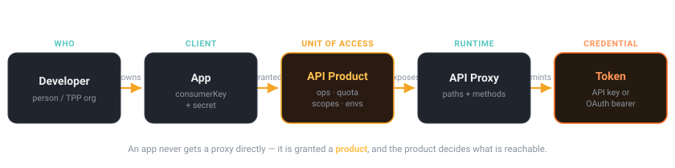

3.2 — API Products, Apps, Developers & keys
Bottom line
Before you can authorize a call you must know which consumer makes it. Apigee models that with a chain — Developer → App → API Product → Proxy — and the API Product, not the proxy, is the unit of access. By the end you can build the chain, enforce it with VerifyAPIKey, and drive a quota from the product. This is the model OAuth and Open Banking sit on top of, so it never goes away.
Why this exists
In a Spring service, "who is calling?" usually means an API-key table you built, or an OAuth client registry, plus some notion of what plan/scopes that client has. You wired those together yourself. Apigee gives you that whole apparatus as first-class objects — and crucially, it separates identity (who) from entitlement (what they're allowed), so changing a customer's plan is a config edit, not a redeploy.
The non-obvious part — and the part worth slowing down for — is that an app is never granted a proxy directly. It's granted an API Product, and the product decides which proxies, which paths and methods, which environments, plus the quota and OAuth scopes. The product is the unit of access control.
Spring Boot bridge
There's no clean Spring equivalent — that's exactly why this session exists. The closest mental model is two things you'd otherwise build by hand and glue together:
- an OAuth client registry (Spring Authorization Server's
RegisteredClient) — the App, with itsconsumerKey/consumerSecret; - an entitlements / plans table — the API Product, bundling allowed operations + quota + scopes.
Apigee ships both, already wired, with VerifyAPIKey as the enforcement filter. If you've ever wished your RegisteredClient also carried "and this client may call these endpoints at this rate," that's an API Product.
Where the analogy breaks
Spring's authorization is usually role/scope-centric: a token has scopes, an endpoint requires them, done. Apigee's product model is entitlement-centric and indirection-heavy: the app's reachable surface is computed from the product it's bound to, not from anything on the app itself. Two apps with identical credentials-shape can have completely different reach because they hold different products. Don't look for "the app's permissions" — look at the product.
The concept

In objects:
Developer (a person/org: tpp-acme@example.com)
└── App (a registered client: "Acme Budgeting App")
├── consumerKey / consumerSecret ← the credentials
└── is granted one or more →
API Product ("AISP Read")
└── bundles: proxy operations + quota + scopes + environments
When a request arrives with a key, VerifyAPIKey walks this chain backwards: key → app → products → is the called operation in any granted product, in this environment? If yes, it loads a pile of context variables you'll use downstream.
Watch out
Stop looking for "the app's permissions" — there's no such field. An app's reachable surface is computed entirely from the product(s) it holds. Two apps with identically-shaped credentials can reach completely different endpoints because they were granted different products. Debug entitlement at the product, never at the app.
Hands-on lab — gate a proxy on app identity
Lab — build the chain, then enforce it
Prereqs: $ORG, $ENV, $TOKEN, $RUNTIME_HOST exported, and a deployed proxy named aisp-accounts (reuse your passthrough, renamed, or any proxy serving /accounts).
1. An API Product — the unit of access. Scope it to specific paths and methods, not the whole proxy:
apigeecli products create \
--name aisp-read --displayName "AISP Read" --approval auto \
--envs "$ENV" --scopes "accounts" \
--quota 1000 --interval 1 --unit day \
--opgrp '{"operationConfigs":[{"apiSource":"aisp-accounts","operations":[{"resource":"/accounts","methods":["GET"]},{"resource":"/accounts/**","methods":["GET"]}]}]}' \
--org "$ORG" --token "$TOKEN"
Watch out
A product created without an operation group grants the entire proxy — every path and method it serves. The --opgrp above is what scopes this key to GET /accounts only. Skip it and a key meant for account reads can also reach /admin or POST anything the proxy exposes. Always scope products to explicit paths and methods.
2. A Developer (the owning person/org):
apigeecli developers create \
--email tpp-acme@example.com --first Acme --last Fintech --user acme \
--org "$ORG" --token "$TOKEN"
3. An App bound to the product — then read back its credentials:
apigeecli apps create \
--name acme-budgeting --email tpp-acme@example.com --prods aisp-read \
--org "$ORG" --token "$TOKEN"
apigeecli apps get --name acme-budgeting --email tpp-acme@example.com \
--org "$ORG" --token "$TOKEN" | jq '.credentials[0]'
# → { "consumerKey": "....", "consumerSecret": "....", "apiProducts":[{"apiproduct":"aisp-read"}] }
Grab the consumerKey — that's the API key the client sends.
4. Enforce with VerifyAPIKey in the ProxyEndpoint request PreFlow (point ① from session 2.1), reading the key from a header:
<VerifyAPIKey name="VK-Key">
<APIKey ref="request.header.x-api-key"/>
</VerifyAPIKey>
On success Apigee populates rich context you can use downstream:
verifyapikey.VK-Key.client_id → the consumerKey
verifyapikey.VK-Key.apiproduct.name → which product authorized it
verifyapikey.VK-Key.developer.email → tpp-acme@example.com
verifyapikey.VK-Key.apiproduct.developer.quota.limit → drive Quota from here ↓
5. Make the quota product-driven — attach Q-PerApp right after VK-Key. Now the limit lives on the product, not in the proxy:
<Quota name="Q-PerApp">
<Allow countRef="verifyapikey.VK-Key.apiproduct.developer.quota.limit" count="1000"/>
<Interval ref="verifyapikey.VK-Key.apiproduct.developer.quota.interval">1</Interval>
<TimeUnit ref="verifyapikey.VK-Key.apiproduct.developer.quota.timeunit">day</TimeUnit>
<Identifier ref="verifyapikey.VK-Key.client_id"/>
</Quota>
6. Redeploy and test allow/deny:
apigeecli apis create bundle --name aisp-accounts --proxy-folder ./aisp-accounts/apiproxy --org "$ORG" --token "$TOKEN"
apigeecli apis deploy --name aisp-accounts --org "$ORG" --env "$ENV" --ovr --wait --token "$TOKEN"
KEY="<paste consumerKey>"
# no key → 401
curl -s -o /dev/null -w "no key: %{http_code}\n" "https://$RUNTIME_HOST/aisp-accounts/accounts"
# valid key → 200
curl -s -o /dev/null -w "valid key: %{http_code}\n" -H "x-api-key: $KEY" "https://$RUNTIME_HOST/aisp-accounts/accounts"
What success looks like: no key: 401 and valid key: 200. Then change the customer's plan by editing the product's quota and redeploying nothing — the proxy picks up the new limit because it reads countRef from the product. That separation is what Open Banking and monetization both rely on.
Verify it
- Call
/accountswith aPOSTinstead ofGET: you get 401 even with a valid key, because the product's operation group only grantedGET. Entitlement is path and method. - In Trace, confirm
Q-PerAppreports a limit of 1000 sourced fromapiproduct.developer.quota.limit— not a hard-coded value.
Common failure modes
Entitlement-chain mistakes
- Granting the whole proxy. A product with no operation group exposes everything the proxy serves. Always scope to paths + methods. (Symptom: a key meant for
/accountsalso reaches/admin.) - Hard-coding the quota in the proxy. Then every plan change is a redeploy. Drive
QuotafromcountRefso the product owns the number. - Looking for permissions on the app. Reach is on the product the app holds, not the app. Two apps differ because their products differ.
- Forgetting the environment. A product lists which environments it's valid in. A key that works in
evallegitimately 401s inprodif the product doesn't includeprod.
Stretch goal
Stretch goal
Map your team's current API-client onboarding onto the chain: who is the Developer, what's the App, and what would the API Products be (one per plan/tier?). Then find the thing you build today that Apigee would let you delete — usually the bespoke key table or the per-client rate-limit config. Note what you'd have to trust the edge with to actually delete it.
Recap & next
You can now explain why the API Product — not the proxy — is the unit of access, build the Developer → App → Product chain, read out credentials, enforce identity with VerifyAPIKey, and drive quotas from the product so plan changes never touch the proxy.
Next — 3.3: turn that app identity into bearer tokens. You'll make Apigee an OAuth 2.0 token server with the OAuthV2 policy and the client-credentials grant — the role you'd otherwise stand up with Spring Authorization Server — and the same App you built here becomes the OAuth client.